99. Lower Crankcase Installation
Lower Crankcase Installation
Tools Required
* EN 46109 Guide Pins
* J 39946 Crankshaft Socket - 4.0L and 4.6L
* J 45059 Angle Meter
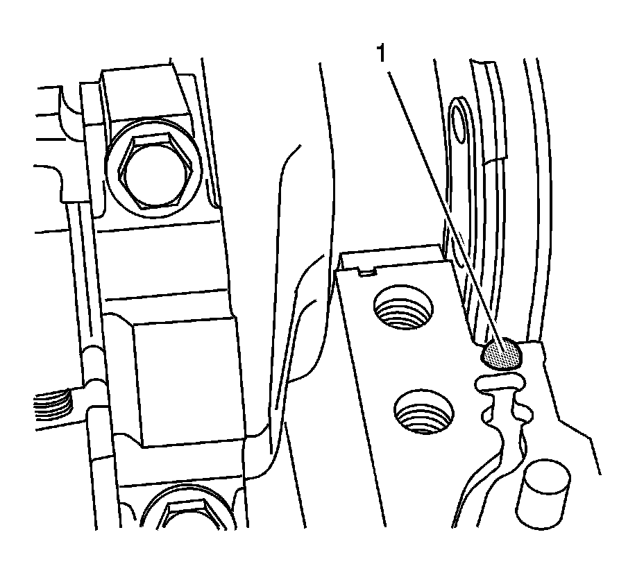
1. Place a 5 mm (0.197 in) spot of RTV sealant GM P/N 12378521 or equivalent (1) at the two points where the crankshaft rear oil seal meets the split line of the engine block.

Important: Ensure components being sealed with RTV are assembled within 20 minutes. Components assembled after the RTV has skinned-over, approximately 20 minutes, will not seal properly.
2. Completely fill and slightly overfill the engine block seal groove with a continuous bead of RTV sealant GM P/N 12378521 or equivalent.
3. Ensure the RTV sealant GM P/N 12378521 or equivalent bead is higher then the rail surface (1) by 1.0-1.5 mm (0.0394-0.0591 in).
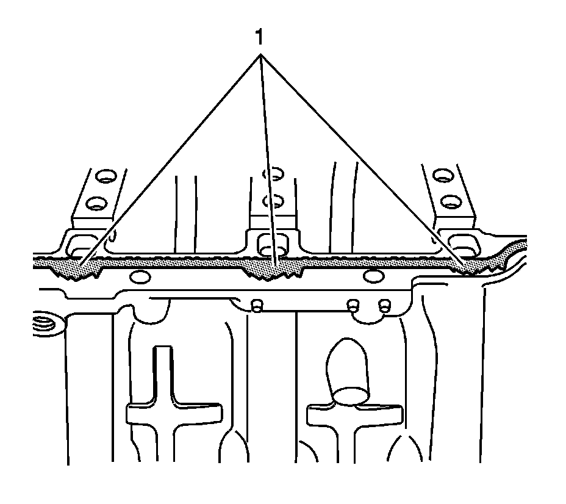
4. Using a suitable tool spread the sealant in the area near the oil drain back passages (1) away from the oil drain back passages toward the outboard edge of the rail surface.
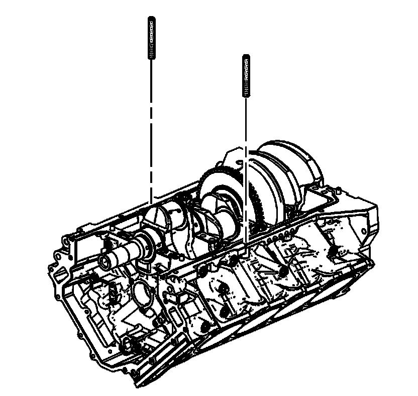
5. To prevent shifting of the lower crankcase install one of the EN 46109 into a bolt hole in each rail.
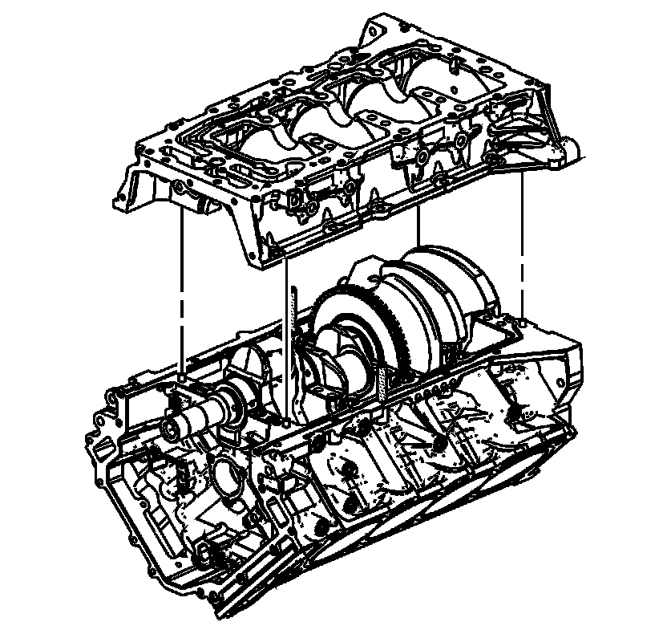
6. Install the cleaned lower crankcase onto the engine.

7. Using a rubber mallet gently tap the lower crankcase into position.
8. Remove both of the EN 46109 .

9. Loosely install the crankcase perimeter bolts on the right side.

10. Loosely install the crankcase perimeter bolts on the left side.
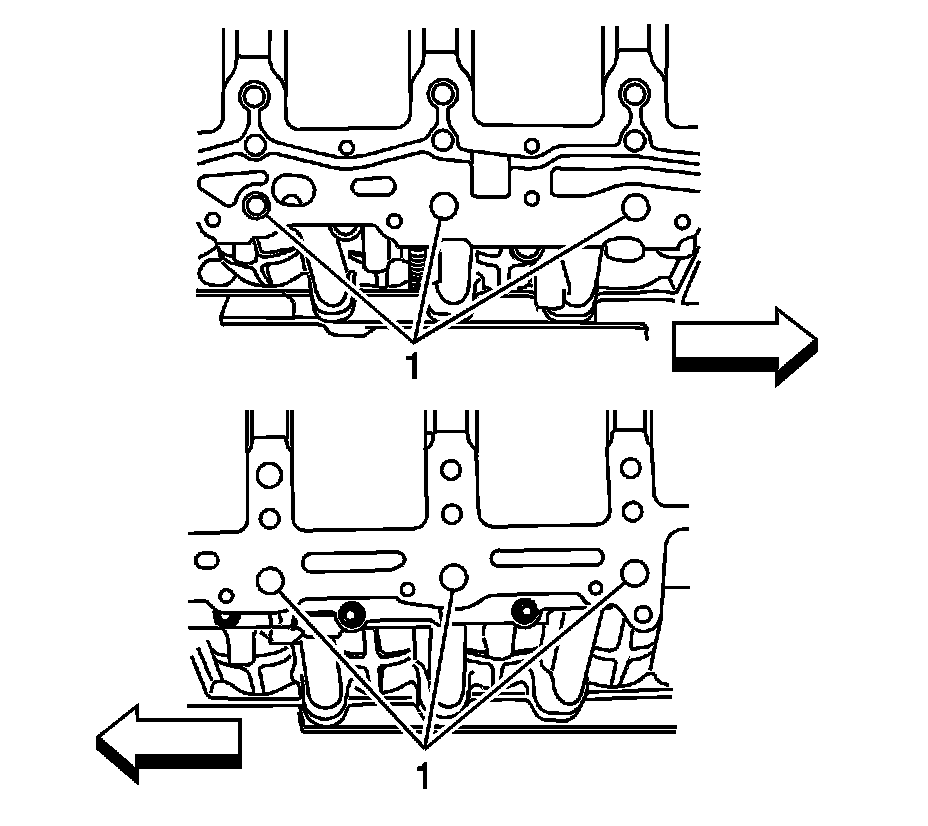
11. Using a small long blade screwdriver clean out any sealant in the oil drain back passages (1).
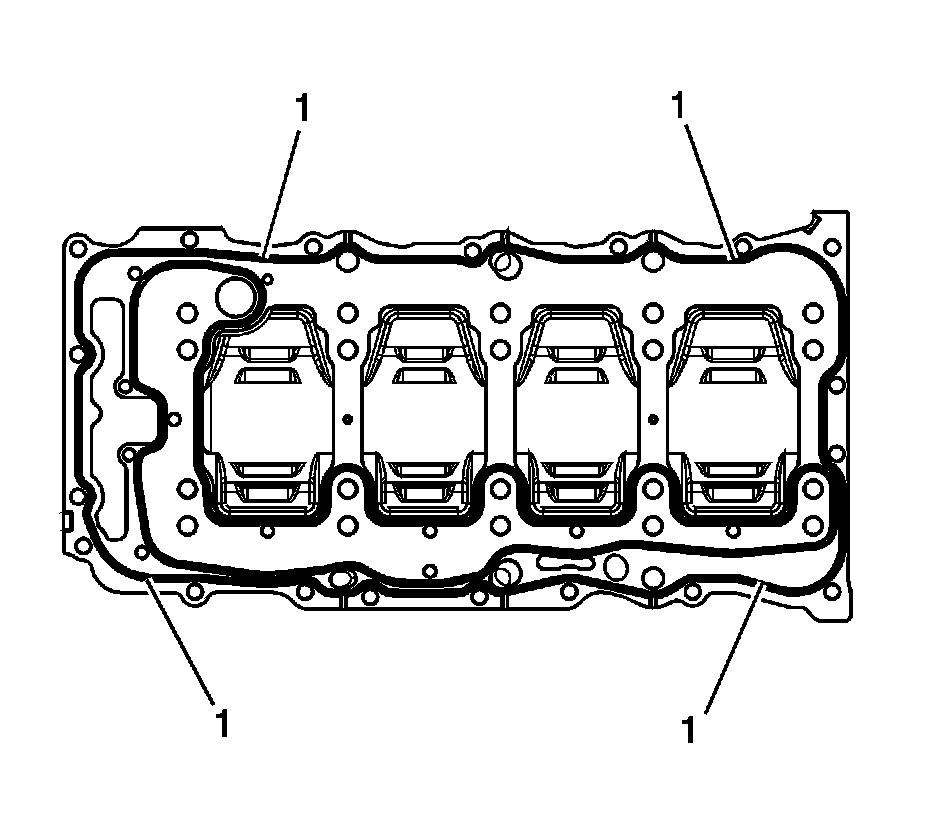
Important: Ensure components being sealed with RTV are assembled within 20 minutes. Components assembled after the RTV has skinned-over, approximately 20 minutes, will not seal properly.
Important: DO NOT apply sealant to the inner seal of the oil distribution plate.
12. Using a NEW oil distribution plate, remove the outer seal (1) if installed, and completely fill and slightly overfill the outer seal groove (1) with a continuous bead of RTV sealant GM P/N 12378521 (Canada P/N 88901148) or equivalent. Ensure the RTV sealant bead is higher than the plate surface by 1.0-1.5 mm (0.0394-0.0591 in).
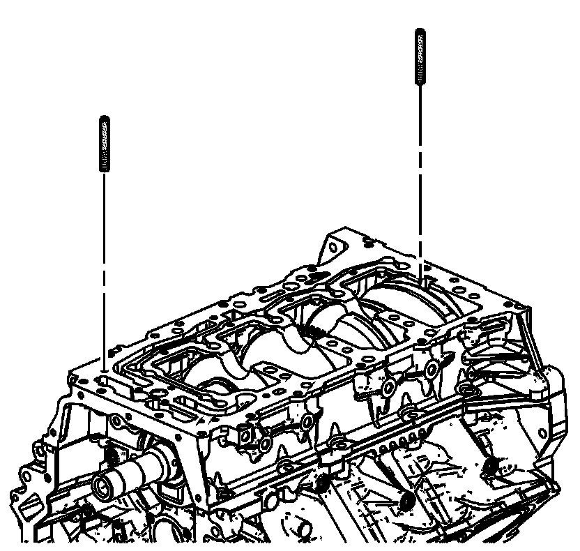
13. To prevent shifting of the oil distribution plate install one of the EN 46109 into a bolt hole in each side of the lower crankcase.
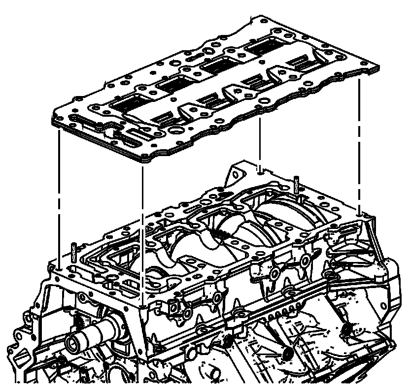
14. Install the NEW oil distribution plate.
15. Remove both of the EN 46109 .
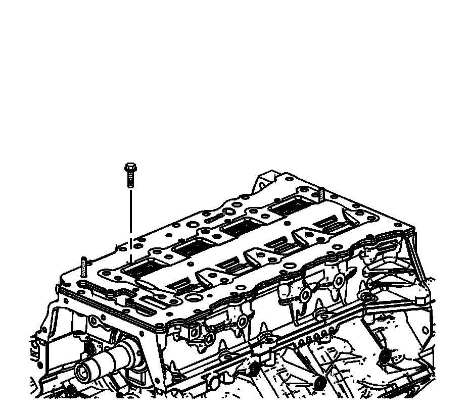
Notice: Refer to Fastener Notice .
16. Install the oil distribution plate bolts.
Tighten the oil distribution plate bolts to 10 N.m (89 lb in).
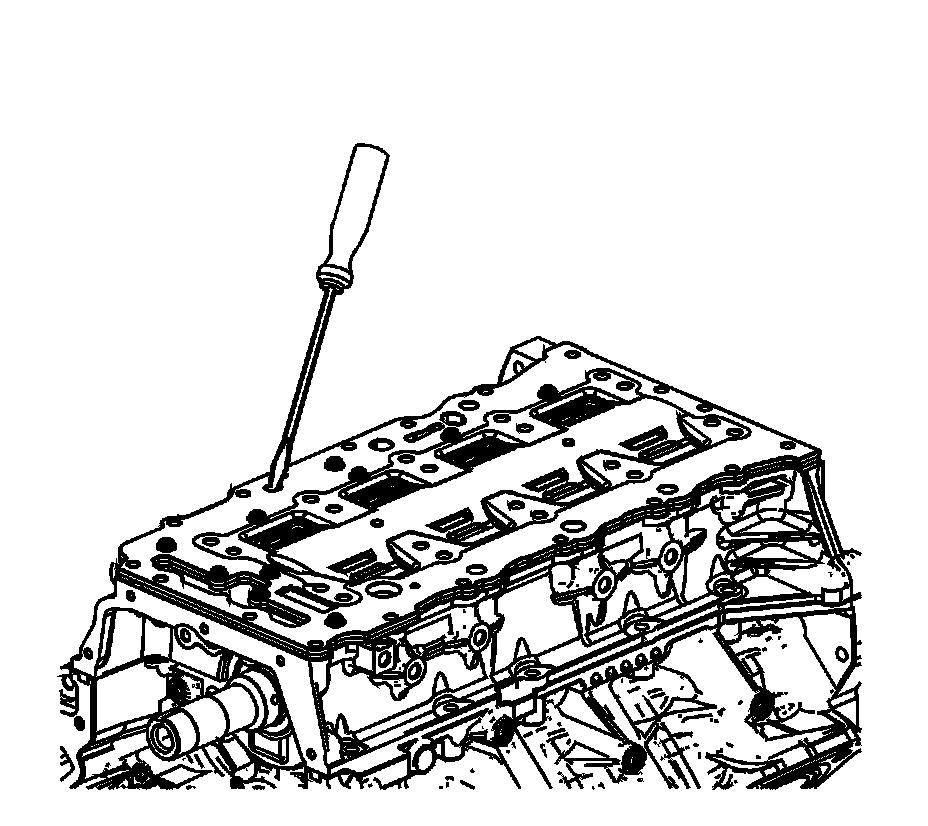
17. Using a small long blade screwdriver clean out any sealant in the oil drain back passages.
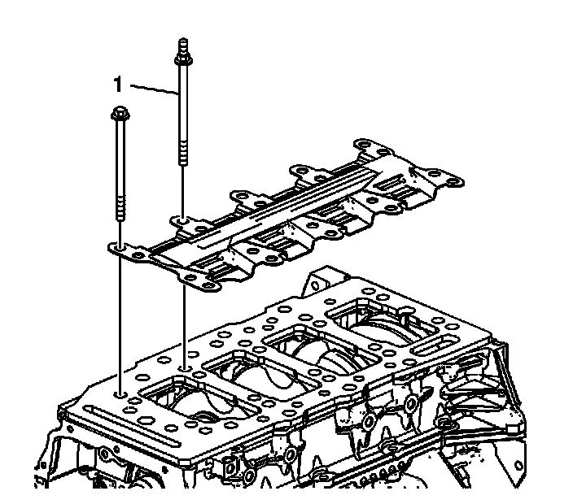
18. Install the crankshaft oil scraper plate.
19. Install the main bearing bolts. Ensure the stud-head bolt (1) used for the oil suction tube support bracket is placed in the proper position.

20. Tighten the main bearing bolts in the proper sequence.
1. First Pass
Tighten the main bearing bolts (1-20) to 20 N.m (15 lb ft ) in the proper sequence.
2. Final Pass
Tighten the main bearing bolts (1-20) an additional 65 degrees in the proper sequence using the J 45059 .
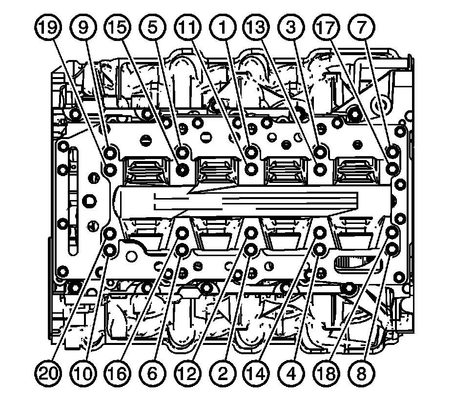
21. Tighten the crankcase perimeter bolts in sequence shown.
Tighten the crankcase perimeter bolts to 30 N.m (22 lb ft).
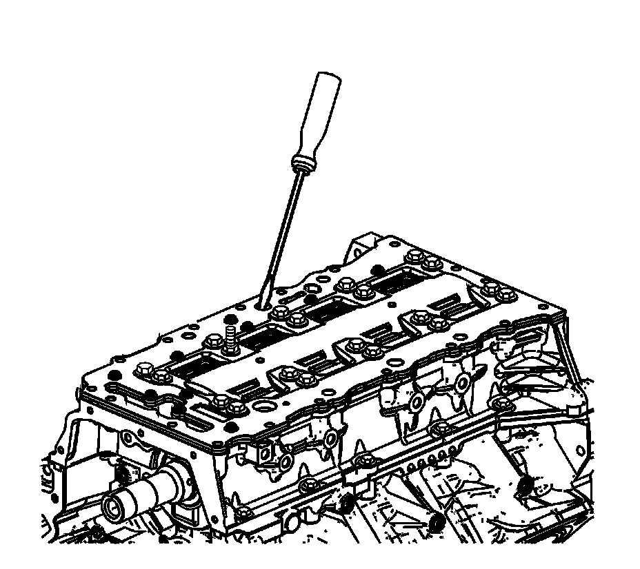
22. Using a small long blade screwdriver verify that the threaded holes for the oil pan bolts and the oil drain back passages are clear of sealant.
23. Using the J 39946 rotate the crankshaft until the number one piston is at top dead center (TDC) and the crankshaft key way is approximately at the 7 o'clock position.